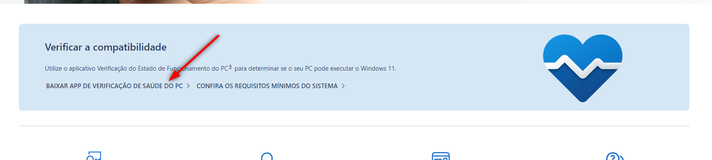

De tempos em tempos ao Microsoft lançanovas versões de seu Sistema Operacional,recentemente a Microsoft lançou a nova versão do Windows também conhecida como Windows 11.
Porém, alguns computadores podem não ter os requisitos mínimos para a instalação dessa nova versão de sistema operacional. Agora eu te pergunto, você sabe se o seu computador conseguirá rodar o Windows 11?
Veja abaixo como fazer para verificar se isso será possível em seu computador.
1. Acesse a página ofical do Windows 11 e clique em "Baixar app de verificação de saúde do PC".
2. Clique em "Salvar".

3. Abra o arquivo recém baixado.
4. Marque a opção "I accept the terms in the Licence Agreement", e em seguida clique em "Install".
5. Aguarde o término da instalação e clique em "Finish".
6. Na janela que abrir, clique em "Verificar agora".
7. Nesse ponto o programa verificará se seu computador tem os requisitos necessários para uma atualização. Se seu computador for compatível com o Windows 11, aparecerá a mensagem abaixo:
Caso o seu computador não suporte a instalação do Windows 11, a mensagem abaixo será exibida:
Se seu computador não for compatível com a instalação do Windows 11, não se preocupe (por enquanto, rs) há informações de que seu suporte será mantido até outubro de 2025.
Texto de Jefferson Lucas